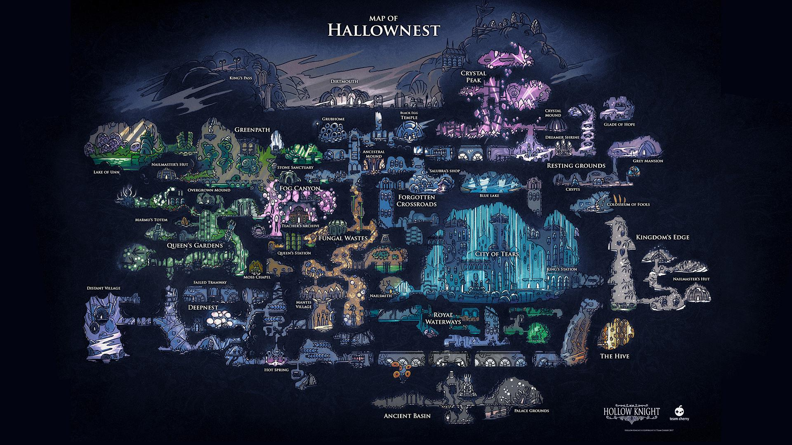

Explore o Reino Esquecido de Hallownest

Bem-vindo a Hollow Knight, um aclamado jogo de ação e aventura 2D. Você assume o papel de um cavaleiro silencioso que explora o vasto e melancólico reino de Hallownest. O que antes era uma civilização próspera, agora jaz em ruínas, infectada por uma praga misteriosa que enlouqueceu seus habitantes. A sua missão é desvendar os segredos deste reino, enfrentando criaturas corrompidas e chefes desafiadores em uma jornada bela, porém perigosa e solitária.
Habitantes de Hallownest

Em suas viagens, você encontrará diversos insetos, amigos e inimigos. Alguns dos mais notáveis são:
- O Cavaleiro: O protagonista silencioso, um receptáculo em uma jornada para selar a infecção.
- Hornet: Uma ágil guerreira e protetora de segredos, que testa a força e a determinação do Cavaleiro.
- Quirrel: Um explorador amigável e curioso, fascinado pelas ruínas de Hallownest.
- O Último Besouro: Um nobre inseto que opera o último serviço de transporte, conectando as áreas do reino.
- Cornifer: Um cartógrafo que você encontrará em novas áreas, sempre feliz em vender um mapa.
Como Sobreviver à Aventura
Hollow Knight é um jogo do estilo "Metroidvania", que exige exploração e habilidade. Para ter sucesso, você deve dominar:
- Exploração e Mapeamento: Hallownest é um labirinto. Comprar mapas de Cornifer e a bússola de Iselda é essencial.
- Combate Preciso: Aprenda os padrões de ataque dos inimigos e chefes. Use seu ferrão e magias com sabedoria.
- Amuletos (Charms): Encontre e equipe dezenas de amuletos para customizar suas habilidades e ganhar bônus.
- Aquisição de Habilidades: Derrotar chefes e explorar libera novas habilidades (como pulo duplo e dash) que abrem caminhos antes inacessíveis.
Dicas para Iniciantes
Hallownest pode ser implacável. Lembre-se destas dicas:
- Ataque para baixo (pogo jump) em espinhos e inimigos para atravessar obstáculos.
- Sempre se sente nos bancos que encontrar para salvar seu progresso e atualizar seu mapa.
- Invista seu Geo (dinheiro do jogo) em itens importantes como os amuletos de Iselda e o mapa da área.
Deixe sua Mensagem
Gostou do site? Tem alguma dica de Hollow Knight? Fale conosco!